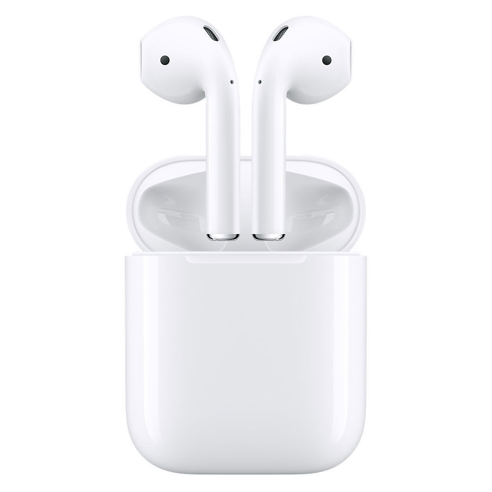
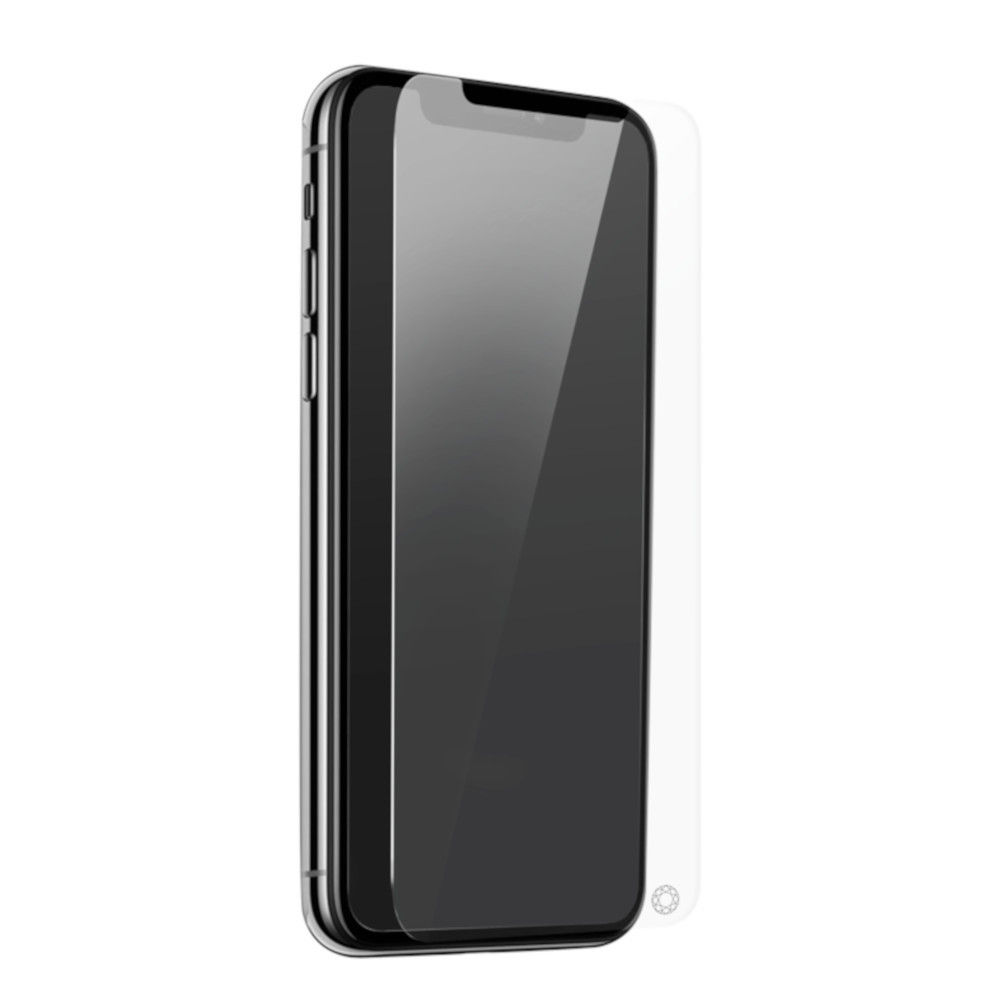
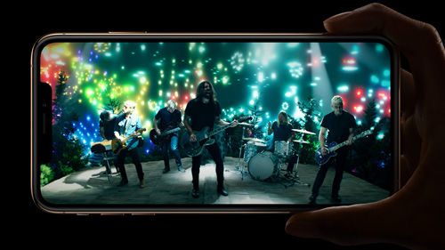
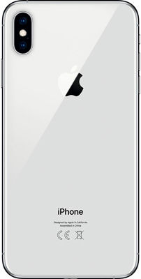
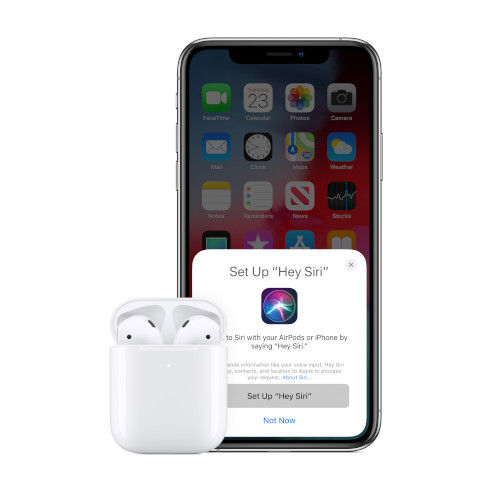

L'inform


Apple iPhone Xs Max - 64 Go - Argent + Airpods 2019 "Classic" + Verre trempé
Réf APPLE : BUN32703
Ecran 6.5" Super Retina HD - Apple A12 Hexa Core - IP68 - 64 Go - Double Capteur Photo 12 Mpx - iOS 12
Réf APPLE : BUN32703
Ecran 6.5" Super Retina HD - Apple A12 Hexa Core - IP68 - 64 Go - Double Capteur Photo 12 Mpx - iOS 12


Apple iPhone Xs Max - 64 Go - Argent + Airpods 2019 "Classic" + Verre trempé
APPLE
Garantie légale de conformité : 2 ans

IPHONE XS MAX-64 GO-ARGENT
Apple Airpods 2019 V2 "Classic"
APPLE
Garantie légale de conformité : 2 ans
IPHONE XS MAX-64 GO-ARGENT
| PLACE AUX GRANDS ÉCRANS | |
| Super Retina. En grand. En très grand. Créé spécialement, l’écran OLED de l’iPhone XS offre les couleurs les plus précises du marché, le HDR et des noirs vraiment fidèles. Et l’iPhone XS Max bénéficie d’un écran aux dimensions inédites sur iPhone. | |
| MATÉRIAUX D’EXCEPTION | |
| Le verre le plus résistant jamais conçu pour un smartphone. Une superbe nouvelle finition or, obtenue au terme d’un procédé au niveau atomique. Des bandes d’acier inoxydable chirurgical usinées avec précision. Et un degré inédit de résistance à l’eau et à la poussière2. |
| FACE ID AVANCÉ |  |
| Lorsque votre visage fait office de mot de passe, la sécurité devient une évidence. D’un simple regard, vous pouvez déverrouiller votre iPhone, vous connecter à des apps et régler vos achats. Face ID est la technologie d’authentification faciale la plus sûre jamais intégrée à un smartphone. Et maintenant, elle est encore plus rapide. | |
| PUCE A12 BIONIC INTELLIGENTE | |
| Dotée du Neural Engine de nouvelle génération signé Apple, c’est la plus intelligente et la plus puissante des puces de smartphone. Pour des expériences de réalité augmentée à couper le souffle. Des portraits saisissants grâce à la fonctionnalité Contrôle de la profondeur. Mais aussi vitesse et fluidité dans tout ce que vous faites. |
 |
DOUBLE APPAREIL PHOTO |
| Un système d’avant?garde. L’appareil photo le plus populaire au monde inaugure une nouvelle ère de la photographie. Une ère dans laquelle un capteur innovant s’associe à l’ISP et au Neural Engine pour vous permettre d’exprimer vos talents comme jamais auparavant. | |
| HDR intelligent De nouvelles couches d’images, un capteur plus rapide et la puissance de la puce A12 Bionic font ressortir les tons clairs et foncés de vos photos. |
|
| Des pixels plus grands et plus profonds Un nouveau capteur assure une meilleure fidélité de l’image, une plus grande précision des couleurs et une réduction du bruit dans les images prises par faible éclairage. |
|
|
Effet bokeh amélioré Un flou d’arrière?plan sophistiqué donne aux photos prises en mode Portrait un aspect encore plus professionnel. |
|
| Profondeur de champ réglable Quand vous retouchez vos portraits, vous pouvez désormais ajuster la profondeur de champ de façon à en flouter plus ou moins l’arrière?plan. |
Apple Airpods 2019 V2 "Classic"
 |
Sans fil et sans égal |
| Sans fil et sans égal. Après une configuration en un seul geste, vos AirPods s’activent automatiquement et restent toujours connectés. Pour les utiliser, c’est tout aussi simple. Les AirPods détectent quand vous les placez à l’oreille et mettent en pause ce que vous écoutez dès que vous les retirez. Et que vous connectiez vos AirPods à votre iPhone, votre Apple Watch, votre iPad ou votre Mac, l’expérience est toujours sensationnelle. | |
| Demandez-le à Siri | |
| Il n’a jamais été aussi simple de vous adresser à votre assistant personnel préféré. Dites juste « Dis Siri » pour obtenir un coup de main, sans avoir à vous préoccuper de votre iPhone. | |
| Des performances inouïes. | |
| Dotés de la nouvelle puce d’écouteurs H1 conçue par Apple, les AirPods bénéficient d’une connexion sans fil plus rapide et plus stable — jusqu’à 2x plus rapide quand vous passez d’un appareil actif à l’autre — et d’un temps de connexion 1,5x plus rapide pour les appels téléphoniques. La puce H1 permet aussi l’activation vocale de Siri et une réduction de 30 % du temps de latence pour les jeux vidéo. Alors, que vous jouiez, écoutiez de la musique ou suiviez un podcast, vous bénéficiez toujours d’une qualité de son optimale. |
| Dimensions | 157.5 x 77.4 x 7.7 mm |
| Poids | 208 g |
| Système d'exploitation | iOS 12 |
| Certification | IP 68 - Résistance aux éclaboussures, à l’eau et à la poussière |
| Écran |
Taille : 6.5" Résolution : Super Retina HD 2688x 1242 pixels - 458 ppp Type : OLED HDR Multi-Touch tout écran Contraste : 1 000 000:1 (standard) Affichage True Tone Large gamme de couleurs (P3) Luminosité maximale de 625 cd/m2 (standard) >3D Touch |
| Processeur |
Puce A12 Bionic avec architecture 64 bits Système neuronal |
| Stockage | 64 Go |
| Appareil photo |
Principal : 12 Mpx Ouverture : Grand angle f1.8 - Téléobjectif f2.4 Zoom Optique : X2 Flash : True Tone quadri-LED avec synchro lente Zoom numérique x10 Enregistrement video 4k@60fps @24fps @30fps Enregistrement video 1080p @60fps @30fps Ralenti en 1080p à 120 ou 240 i/s Mode Portrait avec effet bokeh avancé et Contrôle de la profondeur Éclairage de portrait avec cinq effets (Naturel, Studio, Contour, Scène, Scène mono) Double stabilisation optique de l’image Objectif à six éléments Flash True Tone quadri-LED avec synchro lente Panoramique (jusqu’à 63 Mpx) Protection de l’objectif en cristal de saphir Capteur arrière de luminosité Filtre infrarouge hybride Mise au point automatique avec Focus Pixels Mise au point par toucher avec Focus Pixels HDR intelligent pour les photos Photos et Live Photos à large gamme de couleurs Mappage de ton local Correction des yeux rouges avancée Réglage de l’exposition Stabilisation automatique de l’image Mode Rafale Mode Retardateur Géoréférencement des photos Formats d’image disponibles : HEIF et JPEG Frontal : 7 Mpx Ouverture : 2.2 Enregistrement video 1080p Mode Portrait avec effet bokeh avancé et Contrôle de la profondeur Éclairage de portrait avec cinq effets (Naturel, Studio, Contour, Scène, Scène mono) Animoji et Memoji HDR intelligent pour les photos Gamme dynamique étendue pour la vidéo à 30 i/s Stabilisation vidéo de qualité cinéma (1080p et 720p) Photos et Live Photos à large gamme de couleurs Retina Flash Capteur arrière de luminosité Stabilisation automatique de l’image Mode Rafale Réglage de l’exposition Mode Retardateur |
| Multimédia |
Formats vidéo pris en charge : HEVC, H.264, MPEG-4 Part 2 et Motion JPEG Prise en charge des contenus Dolby Vision et Recopie vidéo AirPlay et sortie photo et vidéo vers Apple TV (2e génération ou ultérieure)6 Recopie vidéo et sortie vidéo : jusqu’à 1080p via l’Adaptateur Lightning AV numérique et l’Adaptateur Lightning vers VGA (adaptateurs vendus séparément) Formats audio pris en charge : AAC-LC, HE-AAC, HE-AAC v2, AAC protégé, MP3, PCM linéaire, Apple Lossless, FLAC, Dolby Digital (AC-3), Dolby Digital Plus (E-AC-3) et Audible (formats 2,3, 4, Audible Enhanced Audio, AAX et AAX+) Son stéréo plus ample Volume d’écoute maximal configurable par l’utilisateur |
| Batterie |
Type: Batterie au lithium-ion rechargeable intégrée Chargement sans fil avec des chargeurs Qi Jusqu’à 1 heures 30 d’autonomie de plus que l’iPhone x Temps de conversation (sans fil) : Jusqu’à 25 heures Navigation sur Internet : Jusqu’à 13 heures Lecture vidéo (sans fil) : Jusqu’à 15 heures Lecture audio (sans fil) : Jusqu'à 65 heures Capacité de chargement rapide : Jusqu’à 50 % de charge en 30 minutes |
| Carte SIM | Nano SIM + eSim |
| Connectivité |
Wifi 802.11 ac avec MIMO Bluetooth 5.0 NFC avec mode lecteur Connecteur Lightning |
| Localisation / Navigation | GPS / GLONASS / Galileo / QZSS assistés |
| Réseau |
FDD LTE (bandes 1,2, 3,4, 5,7, 8,12,13,14,17,18,19,20,25,26,29,30,32,66,71) TD LTE (bandes 34,38,39,40,41,46) CDMA EV-DO Rev. A (800,1 900 MHz) UMTS/HSPA+/DC-HSDPA (850,900,1 700/2 100,1 900,2 100 MHz) GSM/EDGE (850,900,1 800,1 900 MHz) |
| Capteurs |
Face ID Baromètre Gyroscope à trois axes Accéléromètre Détecteur de proximité Capteur de luminosité ambiante |
| Contenu de la boîte |
iPhone avec iOS 12 Écouteurs EarPods avec connecteur Lightning Câble Lightning vers USB Adaptateur secteur USB Documentation |
| DAS | 0.99W/Kg |